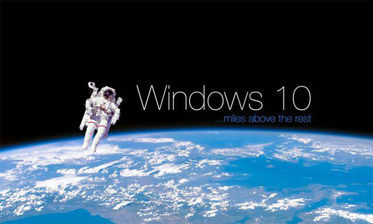

学工动态
Win10来临，为何业界仍不看好微软
200+
来源：学生工作部
作者：IFNITE工作室
发布时间：2015年07月30日14:12

在微软对操作系统做出突破性革新的三年后，北京时间7月29日，微软终于正式发布了最新版操作系统Windows10，所有正版Windows7和Windows8.1的用户均可免费升级。微软期望可在这套PC、平板电脑、手机及XboxOne通用的操作系统能成为Windows的关键优势，扭转过去4年在PC市场的颓势，并刺激微软线上广告及其他软件服务需求。
从“内在”方面来看，Win10在Win7和8的基础上做了综合性演进，减去或完善了许多曾饱受诟病的功能，如Windows8的动态磁贴。在Windows10中，开始菜单回归任务栏，先前的Metro磁贴也被糅合在开始菜单中；Win8的兼容性一直让用户不满，在新版系统中，旧版软件与外接设备的兼容性也大大提高，这对于游戏玩家和办公人士而言非常有意义；并且新系统同时提供了全新、丰富的应用商店，有望吸引更多的开发者开发UWA应用。
当然，微软此次做出的最大改动当属对浏览器的升级：老久、缓慢的IE被全新的Microsoft Edge浏览器所取代（但IE依然会保留在电脑中），该浏览器为Windows10的默认浏览器。据悉，这款浏览器集成了微软的智能语音助理Cortana、带有阅读清单、密码管理器、支持涂鸦等多种功能。